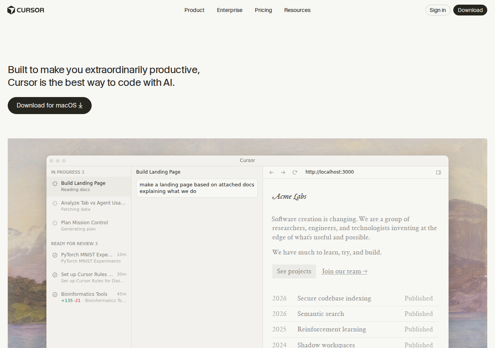
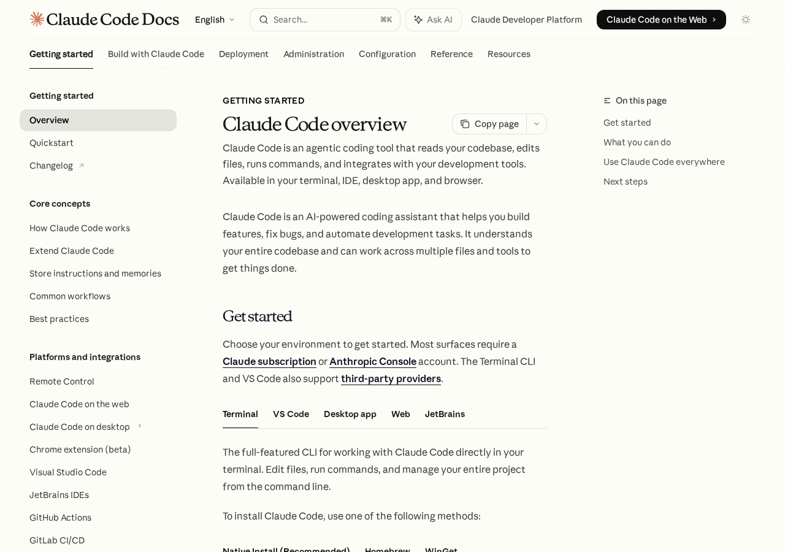
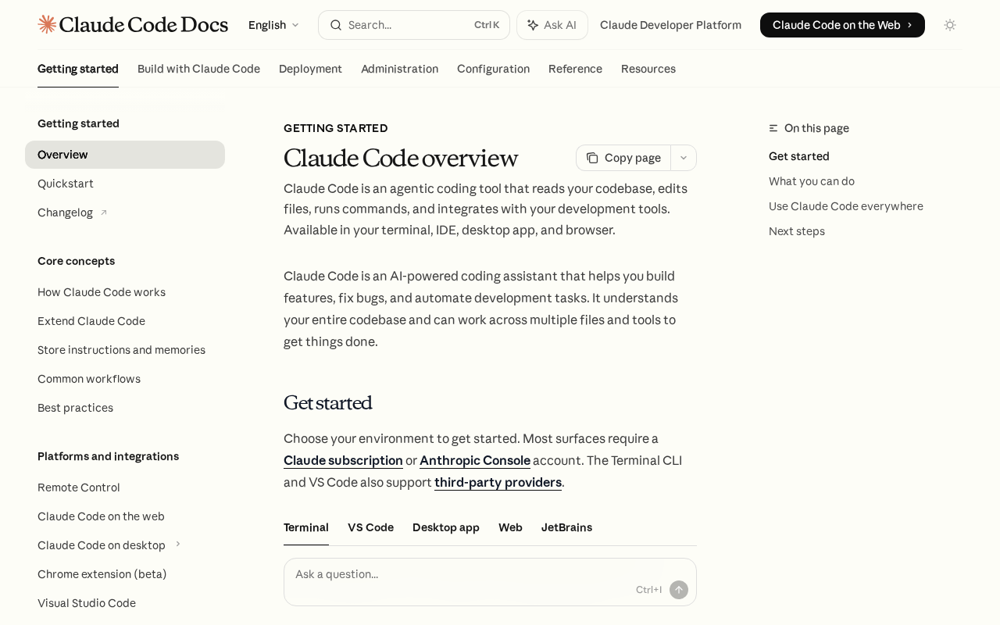
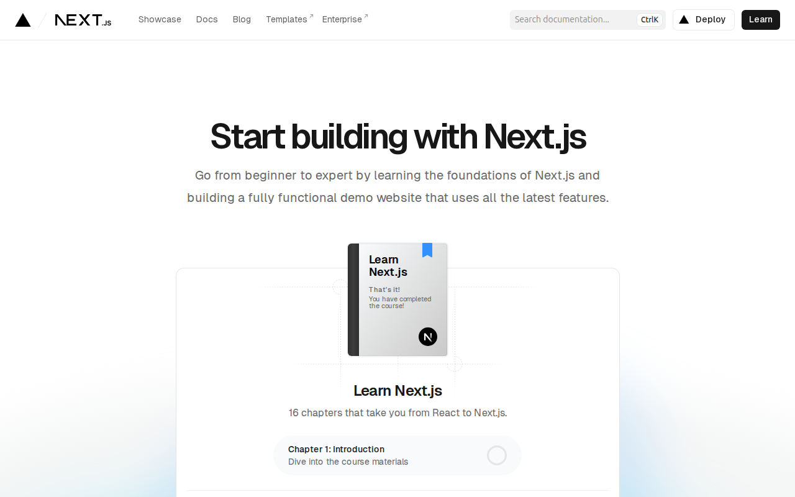

AI에게 말로 설명하면 코드가 만들어지는 시대.
코딩 입문자를 위한 실전 로드맵.
바이브 코딩(Vibe Coding)은 AI에게 자연어로 설명하면 코드를 만들어주는 방식입니다. 직접 코드를 한 줄 한 줄 치는 게 아니라, "로그인 페이지 만들어줘"처럼 말하면 AI가 코드를 생성합니다.
하지만 "코딩을 전혀 몰라도 된다"는 건 반쯤만 맞습니다. AI가 만든 결과물을 확인하고, 문제가 생겼을 때 어디가 잘못됐는지 파악하려면 기초 지식이 필요합니다.
이 가이드는 코딩 경험 0%인 사람이 AI 도구를 활용해 실제 서비스를 만들고 사업할 수 있게 되기까지의 현실적인 로드맵입니다.
이 가이드의 모든 학습은 AI와 대화하면서 진행합니다. 교재를 읽고 외우는 방식이 아닙니다.
| 기존 방식 | AI-Native 방식 |
|---|---|
| 교재 처음부터 끝까지 읽기 | 만들고 싶은 거부터 시작, 모르면 그때 물어보기 |
| 문법 암기 → 문제 풀기 | "이거 뭐야?" → AI가 설명 → 바로 써보기 |
| 에러 나면 구글 검색 | 에러 메시지 복붙하면 AI가 원인 + 해결책 설명 |
| 모르는 개념 → 블로그/유튜브 검색 | "초등학생도 알게 설명해줘" → 즉시 맞춤 설명 |
| 6개월 공부 후 첫 프로젝트 | 첫 날부터 뭔가 만들면서 배우기 |
AI는 24시간 무료 과외 선생님입니다. 바보 같은 질문이란 건 없습니다. 같은 걸 열 번 물어봐도 짜증 안 냅니다.
"HTML이 뭐야? 나 코딩 처음인데 진짜 쉽게 설명해줘"
"아직 모르겠어. 비유로 다시 설명해줘" / "예시 하나만 더 보여줘"
"이게 실제로 어디에 쓰여?" / "이거 안 배우면 어떤 문제가 생겨?"
가장 효과적인 학습 루틴입니다. 이론 먼저가 아니라, 만들기 먼저.
"간단한 자기소개 페이지 만들어줘"
코드를 보면서 모르는 부분이 보이면 바로 물어봅니다: "여기서 <div>가 뭐야?"
"배경색을 파란색으로 바꿔줘" — 결과를 보면서 "아, 이렇게 바뀌는구나" 체감
"여기에 버튼 하나 추가해줘. 누르면 알림이 뜨게" — 점점 복잡한 걸 시도
이 사이클을 반복하면 자연스럽게 배웁니다. 교재 순서를 따를 필요 없습니다.
AI가 만든 코드 옆에 한 줄씩 설명을 달아줍니다. 뭐가 뭔지 한눈에 파악 가능.
코드의 흐름을 순서대로 따라가면서 설명해줍니다. 디버깅 능력이 저절로 생깁니다.
하나의 답만 외우지 않고, 여러 접근 방법을 이해하게 됩니다.
AI가 문제를 내고, 맞추면 다음으로, 틀리면 다시 설명해줍니다.
70%만 이해하고 다음으로 넘어가세요. 나머지 30%는 나중에 실제로 쓸 때 자연스럽게 채워집니다. "이런 게 있구나" 수준이면 충분합니다. AI가 나머지를 채워줍니다.
4단계를 순서대로 따라가면 됩니다. 각 단계는 이전 단계 위에 쌓입니다.
생활코딩으로 웹의 기본 원리를 이해합니다
AI에게 시키는 법을 배웁니다 (Cursor → Claude Code)
직접 만들면서 감을 잡습니다
만든 것을 세상에 내놓고 사업합니다
전체 예상 기간: 약 3개월
매일 2~3시간 기준 · 속도는 사람마다 다르니 자기 페이스로!
사용하는 도구의 변화
2 — 4주
생활코딩(opentutorials.org)에는 WEB, DB, 언어, 서버, 데이터과학, Git 등 수십 개 강좌가 있습니다. 전부 볼 필요 절대 없습니다. 아래 6개만 순서대로 보세요.
| 순서 | 강좌 | 핵심 | 소요 시간 |
|---|---|---|---|
| 1 | WEB1 — HTML | 웹페이지 구조 | 1일 |
| 2 | WEB2 — CSS | 스타일링, 레이아웃 | 2-3일 |
| 3 | WEB2 — JavaScript | 변수, 조건문, 함수 | 3-4일 |
| 4 | DATABASE1 | DB 개념 잡기 | 반나절 |
| 5 | MySQL | CRUD 쿼리 기초 | 1-2일 |
| 6 | GIT1 | 버전 관리 기초 | 1일 |
총 약 10일 ~ 2주면 충분합니다.
웹페이지가 어떻게 만들어지는지 배웁니다. 모든 웹 서비스의 기초입니다.
HTML 태그가 뭔지, 웹페이지가 어떻게 구성되는지, 텍스트/이미지/링크를 넣는 법
AI에게 "이 버튼을 왼쪽으로 옮겨줘"라고 말하려면, 화면이 어떤 요소들로 구성되는지 알아야 합니다.
끝까지 다 보세요. 짧고 쉽습니다. 하루면 충분합니다.
웹페이지를 예쁘게 꾸미는 법을 배웁니다. 색상, 크기, 배치 등.
글자 색 바꾸기, 배경 넣기, 요소 크기 조절, 가운데 정렬, 레이아웃 잡기
AI가 만든 화면이 마음에 안 들 때 "여백 좀 늘려줘", "이 버튼 색상을 파란색으로 바꿔줘" 같은 정확한 수정 요청을 하려면 CSS 개념을 알아야 합니다.
박스 모델, flexbox까지 보면 됩니다. grid는 건너뛰어도 괜찮습니다.
웹페이지에 동작을 추가하는 법을 배웁니다. 버튼 클릭, 데이터 처리 등.
변수 (값을 저장하는 상자), 조건문 (if — 만약 ~하면), 반복문 (같은 작업 반복), 함수 (작업 묶음)
모든 프로그래밍의 기본 개념입니다. AI 코드를 읽을 때 "여기서 로그인 성공하면 대시보드로 넘어가는 거구나"를 이해하려면 이 개념들을 알아야 합니다.
함수까지 보면 충분합니다. 객체, 클래스, 정규표현식은 나중에 필요할 때 보세요.
완벽히 이해 안 돼도 괜찮습니다. "이런 게 있구나" 수준이면 됩니다.
데이터를 저장하고 꺼내 쓰는 창고입니다. 회원 정보, 게시글, 주문 내역 — 전부 데이터베이스에 저장됩니다.
DATABASE1으로 "DB가 뭔지" 개념을 잡고 (반나절), MySQL에서 실제 명령어를 배웁니다.
"회원가입 기능 만들어줘"라고 시키면 AI가 데이터베이스 코드를 씁니다. 이때 "사용자 정보가 users 테이블에 저장되는 거구나" 정도는 알아야 문제가 생겼을 때 AI한테 정확히 설명할 수 있습니다.
SELECT, INSERT, UPDATE, DELETE 네 가지 명령어 개념만 잡으세요. Oracle, SQLite는 안 봐도 됩니다. 실제 쿼리는 AI가 써줍니다.
코드의 변경 이력을 관리하는 도구입니다. "세이브 포인트"라고 생각하면 됩니다.
저장(commit), 업로드(push), 다운로드(pull), 되돌리기(revert)
AI가 코드를 잘못 고쳐서 사이트가 망가졌을 때, Git이 있으면 이전 상태로 바로 되돌릴 수 있습니다. 없으면 처음부터 다시 만들어야 합니다.
GIT1만 보면 됩니다. GIT CLI의 Branch, Cherry-pick 같은 심화 내용은 건너뛰세요. GitHub Desktop 앱을 쓰면 클릭만으로 할 수 있습니다.
생활코딩에는 강좌가 매우 많지만, 바이브 코딩 목적이라면 아래는 지금 안 봐도 됩니다:
2 — 3주
AI 코딩 도구는 크게 두 종류입니다. 에디터형(화면에서 코드를 보면서 작업)과 터미널형(대화만으로 작업). 결론부터 말하면:
cursor.com에서 다운로드

Cursor가 처음에 좋은 이유:
1. 에디터에서 Cmd+K (또는 Ctrl+K) 누르기
2. "이 버튼 클릭하면 알림이 뜨게 해줘" 라고 입력
3. AI가 코드를 초록색으로 추가하고 빨간색으로 삭제한 부분을 보여줌
4. "Accept" 버튼 누르면 적용 완료!
docs.anthropic.com/en/docs/claude-code에서 설치 방법 확인

Claude Code가 결국 더 강력한 이유:
$ claude
나: 회원가입 페이지 만들어줘. 이메일이랑 비밀번호 입력하면 되게.
Claude: 네, 회원가입 페이지를 만들겠습니다.
→ src/app/signup/page.tsx 생성
→ src/app/api/auth/signup/route.ts 생성
→ 데이터베이스 마이그레이션 파일 생성
→ npm run test 실행... ✅ 모든 테스트 통과
→ 완료! http://localhost:3000/signup 에서 확인하세요.
| 비교 항목 | Cursor | Claude Code |
|---|---|---|
| 작업 방식 | 화면에서 코드를 보며 AI와 대화 | 터미널에서 말만 하면 AI가 알아서 |
| 코드 이해 | 현재 열린 파일 위주로 이해 | 프로젝트 전체 수백 개 파일을 파악 |
| 한 번에 수정 | 1~2개 파일 | 10개 이상 파일 동시 수정 |
| 터미널 작업 | 직접 명령어 입력해야 함 | AI가 설치·테스트·배포까지 실행 |
| 에러 해결 | 에러 메시지를 복사해서 물어봐야 함 | 에러를 보고 자동으로 고침 |
| 학습 효과 | 코드 구조를 눈으로 익힐 수 있음 ✅ | 빠르게 결과물을 만들 수 있음 ✅ |
| 난이도 | ⭐ 쉬움 (클릭 위주) | ⭐⭐ 보통 (명령어 기반) |
| 가격 | 무료 플랜 있음 (월 $20 Pro) | Claude Max 구독 필요 (월 $100~) |
아래 체크리스트 중 3개 이상에 해당하면 전환할 때입니다:
npm run dev, git commit 같은 터미널 명령이 뭔지 안다Claude Code는 Anthropic이 만든 공식 AI 코딩 도구입니다. 문서가 80개나 되지만 전부 볼 필요 없습니다. 아래 순서대로만 보세요.
docs.anthropic.com/en/docs/claude-code — 이 주소로 가면 됩니다.
| 순서 | 문서 | 내용 | 중요도 |
|---|---|---|---|
| 1 | Overview | 전체 그림 잡기 | 필수 |
| 2 | Quickstart | 설치 + 첫 작업 | 필수 |
| 3 | Common workflows | 실전 패턴 | 필수 |
| 4 | Best practices | 잘 쓰는 방법 | 필수 |
| 5 | Memory | AI에게 프로젝트 설명 | 필수 |
| 6 | Settings | 환경 설정 | 추천 |
| 7 | Interactive mode | 대화형 모드 | 추천 |
Claude Code가 뭘 할 수 있는 도구인지 전체 그림을 잡는 페이지입니다.
"AI한테 말로 시키면 코드를 짜고, 파일을 고치고, 터미널 명령어도 실행해주는 도구"라는 걸 이해하면 됩니다. 터미널, VS Code, 데스크톱 앱, 웹 브라우저 어디서든 쓸 수 있습니다.
이 페이지에서 "What you can do" 섹션을 보세요. 테스트 작성, 버그 수정, Git 커밋, PR 생성 — 코딩 작업 대부분을 AI가 해준다는 걸 파악하면 됩니다.
실제로 설치하고 처음 써보는 단계입니다. 여기서 막히면 AI에게 에러 메시지를 보여주세요.
터미널에 claude 라고 치면 AI와 대화가 시작됩니다. 거기서 "이 프로젝트 설명해줘"라고 말하면 AI가 코드를 읽고 설명해줍니다.
처음엔 기존 프로젝트 폴더에서 시작하세요. 빈 폴더보다 이미 코드가 있는 프로젝트에서 "이 코드 설명해줘"로 시작하는 게 감이 빨리 옵니다.
실제 개발할 때 자주 쓰는 패턴들을 모아놓은 페이지입니다. 가장 실용적인 페이지.
"기능 추가할 때는 이렇게 시켜라", "버그 고칠 때는 이렇게 시켜라", "코드 리뷰할 때는 이렇게 시켜라" — 상황별 시키는 법 모음집입니다.
전부 외울 필요 없고, "이런 것도 시킬 수 있구나"를 파악하세요. 나중에 필요할 때 이 페이지로 돌아오면 됩니다.
같은 도구를 써도 시키는 방법에 따라 결과가 천지차이입니다. 이 페이지가 그 차이를 만듭니다.
"이렇게 시키면 잘 되고, 저렇게 시키면 안 된다"는 노하우 모음입니다. 구체적으로 시키기, 한 번에 하나씩, 결과 확인하기 같은 원칙들.
큰 작업을 작은 단계로 쪼개서 시키라는 것. "쇼핑몰 만들어줘" (X) → "상품 목록 페이지 먼저 만들어줘" (O)
프로젝트 폴더에 CLAUDE.md 파일을 만들면, AI가 매번 새로 시작할 때 이 파일을 먼저 읽습니다.
새 직원에게 주는 "업무 매뉴얼"같은 겁니다. "우리 프로젝트는 Next.js를 쓰고, DB는 Supabase고, 코드 스타일은 이렇게 해줘"라고 적어두면 AI가 알아서 따릅니다.
이게 없으면 매번 "우리 프로젝트는..." 설명을 반복해야 합니다. 한 번 써두면 영원히 기억합니다.

영어 공식 문서가 부담스러울 수 있는데, Chrome 브라우저의 번역 기능을 쓰면 페이지 전체가 한국어로 바뀝니다. 번역 품질도 꽤 좋습니다.
Chrome에서 공식 문서 주소를 엽니다
페이지 아무 곳이나 마우스 오른쪽 클릭
"한국어로 번역" 메뉴를 클릭
전체 페이지가 한국어로 바뀜
Chrome 모바일 앱에서도 주소창 아래에 "번역" 버튼이 뜹니다. 터치 한 번이면 됩니다.
기술 용어는 번역이 어색할 수 있습니다. 그때는 AI에게 "이 문서 내용을 한국어로 쉽게 설명해줘"라고 물어보면 더 자연스러운 설명을 받을 수 있습니다.
Chrome 번역으로 대략 읽고 → 이해 안 되는 부분만 AI에게 물어보기. 이게 가장 빠릅니다.
바이브 코딩의 핵심은 "어떻게 시키느냐"입니다. 같은 AI라도 시키는 방법에 따라 결과가 천지차이입니다.
"로그인 만들어줘" (X) → "이메일과 비밀번호 입력 필드가 있는 로그인 페이지. 로그인 버튼 클릭 시 /dashboard로 이동" (O)
한꺼번에 10가지를 시키면 품질이 떨어집니다. 하나 완성 → 확인 → 다음 작업.
AI가 만든 걸 무조건 믿지 마세요. 실행해보고, 눈으로 확인하고, 이상하면 수정 요청하세요.
에러가 나면 당황하지 말고, 에러 메시지를 그대로 복사해서 AI에게 붙여넣으세요. AI가 알아서 고쳐줍니다.
직접 공부할 필요 없습니다. "이게 뭐하는 건지"만 알면 됩니다. AI가 코드는 알아서 씁니다.
| 기술 | 비유 | 하는 일 |
|---|---|---|
| Next.js | 집의 구조 | 화면을 만든다 (페이지, 버튼, 입력칸 등) |
| Supabase | 창고 + 경비원 | 데이터 저장 + 로그인 처리 |
| Vercel | 부동산 | 만든 사이트를 인터넷에 올린다 |
| Stripe | 카드 단말기 | 결제를 받는다 |
4 — 6주
Next.js는 가장 많이 쓰이는 웹 프레임워크입니다. 공식 튜토리얼이 16개 챕터로 되어있는데, 전부 볼 필요 없습니다.
nextjs.org/learn — 클릭 한 번으로 시작. Chrome 우클릭 → 한국어 번역으로 바로 읽으세요.

| 챕터 | 제목 | 쉽게 말하면 | 중요도 |
|---|---|---|---|
| 0-1 | Introduction + Getting Started | 프로젝트 만들기 | 필수 |
| 2 | CSS Styling | 예쁘게 꾸미기 | 필수 |
| 4 | Layouts and Pages | 페이지 구조 잡기 | 필수 |
| 5 | Navigating Between Pages | 페이지 이동 | 필수 |
| 6 | Setting Up Your Database | DB 연결 | 필수 |
| 7 | Fetching Data | 데이터 가져오기 | 필수 |
| 11 | Mutating Data | 데이터 수정/삭제 | 추천 |
| 14 | Adding Authentication | 로그인 기능 | 추천 |
나머지 챕터(3, 8, 9, 10, 12, 13, 15)는 나중에 필요할 때 보면 됩니다.
새로운 Next.js 프로젝트를 만들고 폴더 구조가 어떻게 생겼는지 파악하는 단계입니다.
"집을 짓기 전에 설계도 보는 것"입니다. app/ 폴더 안에 파일을 만들면 그게 곧 페이지가 됩니다.
튜토리얼 따라서 직접 프로젝트를 한 번 만들어 보세요. 이건 직접 해보는 게 좋습니다. AI에게 "Next.js 프로젝트 시작하는 법 알려줘"라고 해도 됩니다.
Next.js에서는 Tailwind CSS라는 걸 써서 꾸밉니다. HTML에 className="text-blue-500" 이렇게 쓰면 파란 글자가 됩니다.
아닙니다. "Tailwind에서 버튼 스타일 어떻게 해?" 하고 AI한테 물어보면 됩니다. "이런 방식으로 꾸미는구나" 감만 잡으세요.
Next.js에서 가장 중요한 개념입니다. 이것만 이해하면 웬만한 웹사이트 구조를 잡을 수 있습니다.
모든 페이지에 공통으로 들어가는 틀입니다. 예: 상단 메뉴바, 사이드바. 한 번 만들면 모든 페이지에 자동 적용됩니다.
app/about/page.tsx 파일을 만들면 → /about 주소가 자동으로 생깁니다. 파일 = 페이지. 이것이 "파일 기반 라우팅"입니다.
<Link href="/about"> 를 쓰면 클릭 시 페이지가 이동합니다. 일반 <a> 태그보다 빠릅니다.
화면에 실제 데이터를 불러와서 보여주는 법을 배웁니다. 이걸 알아야 "진짜 서비스"를 만들 수 있습니다.
데이터베이스에 저장된 상품 목록, 게시글, 사용자 정보를 화면에 가져와서 보여주는 법입니다. 튜토리얼에서는 Vercel Postgres를 쓰지만, 실전에서는 Supabase를 많이 씁니다.
Next.js에서는 서버에서 데이터를 가져옵니다. "서버가 데이터를 준비해서 완성된 페이지를 보내준다"고 이해하면 됩니다. 복잡하게 생각하지 마세요.
튜토리얼을 훑어보면서 "이런 구조구나" 감만 잡으세요. 실제 코드는 AI가 써줍니다. 당신은 "여기에 이런 페이지를 만들어줘"라고 방향만 잡으면 됩니다.
자기소개 페이지를 만들어서 인터넷에 올려봅니다. 가장 쉽고, 배포까지 경험할 수 있습니다.
AI에게 이렇게 시키세요: "Next.js로 개인 포트폴리오 사이트 만들어줘. 자기소개, 프로젝트 목록, 연락처 섹션이 있으면 돼."
메모장이나 할일 목록처럼 데이터를 만들고(Create), 읽고(Read), 수정하고(Update), 삭제하는(Delete) 앱을 만들어봅니다.
여기서 데이터베이스 연동을 처음 경험합니다. 거의 모든 서비스의 기본 구조가 CRUD입니다.
실제로 만들고 싶은 서비스의 최소 버전을 만들어봅니다.
MVP(Minimum Viable Product) = 핵심 기능 딱 1개만 넣은 버전. 예를 들어 배달앱을 만들고 싶다면, 첫 MVP는 "메뉴 보기 + 주문하기" 딱 이것만.
실전
Y Combinator(YC)는 Airbnb, Stripe, Dropbox를 키워낸 세계 최고의 스타트업 액셀러레이터입니다. 사업 시작 전에 이 강의를 꼭 보세요.
ycombinator.com/library — 무료 강의 및 에세이 모음입니다.
유튜브에서 "Y Combinator Startup School"을 검색하면 자막이 있습니다. 역시 AI한테 "YC에서 말하는 MVP 만드는 법 한국어로 요약해줘"라고 물어봐도 됩니다.
"만드는 걸 좋아하는 사람이 아니라, 사용자의 문제를 해결하는 사람이 돼라." 기술이 아니라 고객이 먼저입니다.
| 단계 | 자료 | 형태 |
|---|---|---|
| 기초 | 생활코딩 WEB 시리즈 | 무료 / 한국어 |
| 데이터베이스 | 생활코딩 MySQL | 무료 / 한국어 |
| Git | 생활코딩 Git | 무료 / 한국어 |
| Next.js 감잡기 | Next.js 공식 튜토리얼 | 무료 / 영어 (AI 번역) |
| Claude Code | Anthropic 공식 문서 | 무료 / 영어 |
| 사업 마인드셋 | Y Combinator 강의 | 무료 / 영어 |
가장 중요한 건:
완벽히 준비하고 시작하지 말고,
부딪히면서 배우는 것.
지금 바로 시작하세요